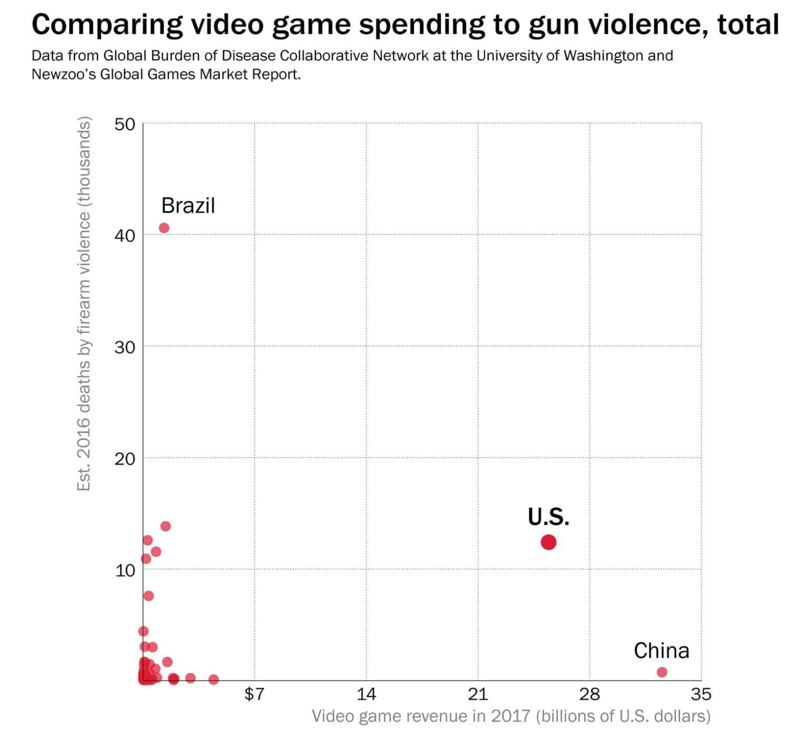

Wouldn't it be easy if everything people thought was true was true? Aliens - they live among us! If you don't forward that chain letter to 10 people - you're dead! if you say Candyman three times into a mirror - also dead! If you play games where you shoot people - you're going to really want to shoot people! [1]
The idea that violent video games can influence someone to commit gun violence has become prevalent as a means to try and explain such a heinous act. Instead of blaming the individuals direct access to a gun or their unstable mind state, the NRA [2] , President Trump [3] , and many more are starting to blame violent video games. This idea is being used as a means to shift our focus away from demanding stronger gun legislation and instead enforce censorship on our media. The fact is that violent media does not influence violent behavior. However, critics defend their stance and say that violent media desensitize the individual to violence. Even though research has not found such a link they still argue that this desensitization can influence one to act out violence. Through analyzing both sides of the argument, we can solidify that violent video games and violent media in general are not the leading factor behind America’s senseless gun violence.
http://www.startribune.com/sack-cartoon-how-nra-dodges-bullets/189297231/(Accessed 2018521)
A study by psychologists was able to show that children who play violent video games have an increase of aggression after playing [4] . Specifically, it was the boys of the group that were influence by the violence. Where as, the girls did not show an increase of aggression. The aggression was linked to the fact that violent video games desensitize the individual. This desensitization causes the individual to underestimate the consequences of aggression enacted on others. That coupled with the fact that boy’s and men account for the majority of all shootings mass or not. It is extremely rare to see a female at the opposite end of the barrel when it comes to mass shootings and shootings in general. For perspective women only commit about 10 to 13 percent of homicides in the United States [5] .So if it is true that gamers of violent video games are more incline to exhibit violent tendencies, then it would make sense to ban those very games from being sold. However, Americans are not the only consumers of violent media around the world. So the fact that mass shootings and gun violence is mostly an American problem is astonishing. Where according to a report that cbs did in 2008 Americans where 10 times more likely to be killed by guns. [6] . In looking at the violence depicted in video games we can see the logic on why we should blame video games.
After the Parkland, Fla shooting, President Trump met with several video game executives as well as a few others to discuss the role that violent video games has on gun violence. [7] Watching the video below without context of the story or scene being shown, it can seem as the games are violent without purpose. From the perspective of a non gamer it may be easier to blame gun violence or violence in general on these very games.
http://www.ign.com/articles/2018/03/09/heres-the-violent-video-game-reel-trump-shared-at-the-white-house (Accessed 2018521)
Violent video games and media are consumed globally. If we compare the sales of video games compared to that countries gun violence. We can analyze if the sales of video games correlates to increase gun violence. Below is an image of such a comparison from the Washington Post. [8]
https://www.washingtonpost.com/news/politics/wp/2018/02/22/if-video-games-spur-gun-violence-its-only-in-the-united-states/?utm_term=.b61cbe6d5b90 (Accessed 2018521)
From the image above we can see that Brazilians spent about two times as less as us Americans on video games in 2016. However, they had about three times as much gun violence than we did. Additionally, we can see that China spent about seven billion more on video games than Americans but had a negligible amount of gun violence. From these statistics it is hard to establish a connection between the video game industry and gun violence. So even though violent video games increased aggression in boys, it is not rational to say that they are likely to be suspects of our next shooting.
In conclusion, we looked at both sides of the debate regarding violent video games influencing gun violence. Psychologists were able to correlate violent video games and violence in young boys. However, this did not create a direct connection to those very boys taking part in gun violence. Statistics on video games sales also failed to connect video games to violence as well. Thus the argument that violent video games has a direct influence on gun violence has no substance. Knowing that we can continue to pressure congress for stronger gun legislation.
My Email: rcollado110@gmail.com